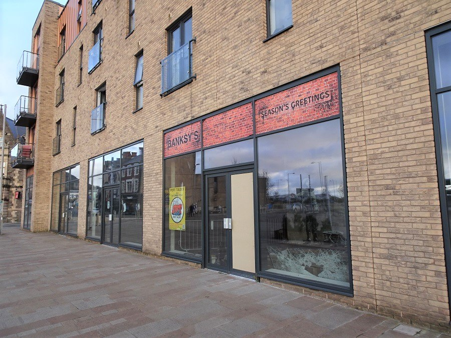

Anglais · Seconde bac pro · A2 and B1 · Lesson 3 of 6
Lesson 3. If you own the wall, do you own the art?
Question of the day: Can someone own the object without owning every right connected to it?
For the teacher: timing (52 minutes)
| Time | Activity |
|---|---|
| 00 to 05 | Retrieval: author, source, confirmation |
| 05 to 12 | Read the Art Buff case and sequence the events |
| 12 to 20 | Three kinds of rights, with No Ball Games and Season's Greetings |
| 20 to 28 | Passive-form workshop and Pest Control |
| 28 to 38 | Mid-point paired oral assessment |
| 38 to 44 | Teacher feedback and student self-correction |
| 44 to 49 | Written record and flashcards |
| 49 to 52 | Exit recommendation and homework |
Checkpoint at minute 44. Every student distinguishes the physical wall from rights in the image, and from public access.
Eight-minute essential closing route (replaces the last eight minutes if the class needs more time; it does not add time): 44 to 46: complete the three-rights chart. 46 to 49: each student gives one recommendation. 49 to 51: copy the legal distinction. 51 to 52: note homework.
A2 outcome
Explain, in simple terms, the difference between a wall, an image and public access.
B1 outcome
Apply these distinctions to a real dispute, without inventing a universal legal rule.
Step 1. Retrieval
Without looking at your notes: who published an identity claim in March 2026? Did Banksy confirm it? How do we say that in one accurate sentence?
Step 2. The Art Buff case (Folkestone, 2014 to 2015)
We do not have a clear open-licence photograph of this mural for the page, so we work from a short educational paraphrase of a court case. The case is useful because it is documented, and because it is limited: it answers one question, not every question.
In September 2014, a mural known as Art Buff appeared on a building in Folkestone. It showed a woman wearing headphones, facing an empty plinth. The business using the building was a tenant, not the freehold owner of the wall. The tenant arranged for a section of wall to be cut out and removed, without the landlord's permission. The landlord later transferred its title and its legal claim to a charity, the Creative Foundation. On 11 September 2015, the High Court decided that the Foundation was entitled to the return of the removed section of wall. The dispute was about the physical object. It did not decide that the public owns every Banksy, and it did not decide that buying a wall automatically buys the copyright in the image.
Source: The Creative Foundation v Dreamland Leisure Ltd, High Court, 11 September 2015.
Exercise 1. Put the events in order.
a. The High Court orders the return of the section of wall. b. A mural appears on a building in Folkestone. c. The landlord's claim is transferred to the Creative Foundation. d. The tenant has the wall cut out, without permission.
Corrigé
b, d, c, a. The mural appears; the tenant removes it; the claim is transferred; the court orders the return of the physical wall.
Exercise 2. True, false, or we cannot say from this case?
- The tenant owned the freehold of the building.
- The court decided that every Banksy mural belongs to the public.
- The dispute was about a physical section of wall.
- The court decided that the charity now owns the copyright in the image.
- The mural was removed without the landlord's permission.
Corrigé
1 False (the tenant was not the freehold owner). 2 False (the case is particular, not a universal rule). 3 True. 4 We cannot say that: the judgement was about the physical object, not about a transfer of copyright. 5 True.
Step 3. Three different questions about ownership
For classroom purposes, keep these three questions apart:
| Question | What it is about | A first example |
|---|---|---|
| Physical ownership | Who owns the wall, or the piece of wall that has been cut out? | In the Art Buff case, the court treated the removed section as part of the landlord's property. |
| Copyright | Who has rights in the artistic image, and who may reproduce it? | A Creative Commons licence for a photograph does not automatically cancel rights in the artwork. |
| Public access | Who can still encounter the work, in the street or elsewhere? | If a mural is removed and sold, passers-by may lose it, even if someone now "owns" the object. |
Look at two photographs that show these questions in a different way. The first shows No Ball Games on a wall in Tottenham, in 2009. The mural was later removed and sold in sections. The second shows Season's Greetings, first painted on a garage in Port Talbot in 2018, and later displayed behind glass, away from its original wall.


A third photograph shows what "removing a mural" can look like. In May 2023, the section of wall that carried the Irpin gymnast was cut out. The figure left the building. The mural was later moved to another site on the same street. Protection and loss can be close to each other.

Step 4. Expanding your vocabulary
| Word or phrase | Meaning | Example |
|---|---|---|
| landlord | the owner of a building, who may rent it to a tenant | The landlord had not given permission. |
| tenant | the person or business that rents a building | The tenant had the wall cut out. |
| to remove | to take something away from its place | The mural was removed from the wall. |
| to return | to give something back | The court ordered the return of the wall section. |
| copyright | the legal rights in an original artistic work | Owning a wall is not the same as owning the copyright. |
| to authenticate | to confirm that a work is by a particular artist | Pest Control authenticates eligible works. |
| certificate | an official document that states something is genuine | A certificate is not a permission to cut out a street mural. |
| public access | the possibility for people to see a work in ordinary life | Removal can reduce public access. |
| however | used to introduce a contrast | The charity obtained the wall. However, that did not settle copyright. |
Grammar of the lesson
The past simple passive is useful for events when the object is more important than the person: The mural was painted in 2014. It was removed without permission. It was returned after a court decision. Form: was / were + past participle.
To give a recommendation: It should stay on the wall. It should not be sold without a public debate.
Exercise 3. Rewrite in the passive.
- Someone painted the mural on a garage in Port Talbot.
- Someone later displayed the work behind glass.
- Someone cut the Irpin gymnast out of the building.
- The High Court ordered the return of the Folkestone wall.
- People sold No Ball Games in sections. (Use was sold.)
Corrigé
1 The mural was painted on a garage in Port Talbot. 2 The work was later displayed behind glass. 3 The Irpin gymnast was cut out of the building. 4 The return of the Folkestone wall was ordered by the High Court. / The Folkestone wall was ordered to be returned by the High Court. The most natural form: The High Court ordered that the wall should be returned (this one can stay active). Accept: The section of wall was ordered to be returned. 5 No Ball Games was sold in sections.
Exercise 4. Wall, image, or access? For each sentence, say which question is at stake.
- Passers-by can no longer see the mural on their way to work.
- A collector buys the cut-out section of brick.
- A website reproduces the image without permission.
- The landlord wants the piece of wall back.
Corrigé
1 Public access. 2 Physical ownership (and, later, perhaps access). 3 Copyright. 4 Physical ownership.
Pest Control, a short teacher-written listening
The teacher reads the following text twice, at a measured pace. Students are told that this is an educational text based on Pest Control's published position, not a quotation. They take notes, then reconstruct.
Pest Control presents itself as Banksy's official contact, and as the source of certificates of authenticity for eligible works. Its public FAQ distinguishes works that can receive a certificate from items it will not certify. It states that it does not issue certificates for illegally executed works. Reporting about the organisation also explains a policy against authenticating street pieces that have been removed from their intended locations. A certificate and an official photograph of a mural in the street are not the same thing. Authentication is not a permission to take a wall down.
A2 pathway
Listen and complete: Pest Control is Banksy's official _______. It can issue a _______ of authenticity for some works. It does not certify illegally executed works. Authentication is not a _______ to remove a mural.
B1 pathway
Listen and write four notes: what Pest Control is; what a certificate does; what it does not certify; why this matters for a removed mural. Then tell your partner, using the passive at least once.
Corrigé
A2: contact; certificate; permission. B1, example reconstruction: Pest Control is the official contact. A certificate can authenticate an eligible work. Illegally executed works, and street pieces removed from their intended place, are not treated as ordinary candidates for a certificate. A mural can be photographed and still not be a saleable, certified object.
Step 5. Mid-point oral assessment
In pairs, you have three minutes. A fictional local café has a mural attributed to Banksy on its side wall. The owner wants to cut it out and sell it. A residents' association wants it to stay. You take sides, then you try to agree on a recommendation. You will be recorded on a school-approved device, or assessed live if recording is not possible. After the assessment, you use the grid to note what you missed, and you write an improved sentence.
A2 pathway
A2, about 45 seconds each, then one minute of interaction. Say: what the owner wants; what the residents want; the difference between the wall and the image; your recommendation, with should and because.
B1 pathway
B1, about one minute each, then one minute of interaction. Use the three-rights distinction, mention the Art Buff case without treating it as a universal rule, mention Pest Control, and answer your partner's objection. Use however, was removed and should.
A2 oral grid (mid-point) /20
| Criterion | 0 to 2 | 3 to 4 | 5 |
|---|---|---|---|
| Task: positions and a recommendation | The task is incomplete | Positions are stated, with a simple recommendation | Clear positions, a recommendation and a reason |
| Ownership distinction | Wall, image and access are mixed | At least two of the three questions are kept apart | The three questions are used simply and correctly |
| Language: vocabulary and syntax | Little language from the sequence | should, because, some passive attempts | Vocabulary reused; was painted / was removed used intelligibly |
| Interaction | Little response to the partner | A question or a short reaction | A real exchange, with a joint or reasoned conclusion |
B1 oral grid (mid-point) /20
| Criterion | 0 to 2 | 3 to 4 | 5 |
|---|---|---|---|
| Task and argument | The task is incomplete | A position is defended, with one limitation | A clear recommendation, an opposing view, a reasoned conclusion |
| Use of the case and of Pest Control | No source, or a universal rule invented | The case or Pest Control is mentioned, with some accuracy | The case is used as a particular example, not as a general law |
| Language: vocabulary and syntax | Limited control | Passive forms and however attempted | Accurate attribution, passive forms, however, sequence vocabulary |
| Interaction | Little response | A relevant reaction | The partner's objection is taken up and answered |
Self-correction: look at the criterion you missed, write what went wrong, and write a better version of one sentence. The improved sentence is part of the work.
Step 6. Written record and homework
A2 pathway
Complete: The wall was... The image is not the same as... The public should / should not... because...
B1 pathway
Write a short professional note (90 to 110 words) to the café owner, explaining the three questions and giving a recommendation. Do not invent a legal rule that the Art Buff case did not decide.
Homework. A2: make two flashcards, was removed and copyright, and learn them. B1: read your professional note aloud and record it, or rehearse it for a partner. Both pathways: look again at the Bristol stencil You don't need planning permission to build castles in the sky. Write two sentences: who might "own" that wall, and who can still see the work.